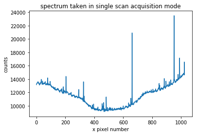
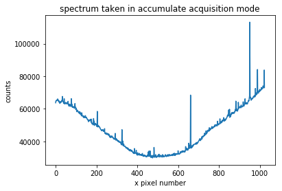

Qcodes example with Andor DU401 BU2¶
[1]:
import matplotlib.pyplot as plt
%matplotlib notebook
from qcodes.instrument_drivers.Andor.DU401 import Andor_DU401
Initialize the instrument¶
The driver for this instrument provides the possibility to setup the instrument with some default settings. However, in this example we will setup the instrument manuall (setup=False).
[2]:
andor = Andor_DU401("Andor", setup=False)
Connected to: Andor DU401_BU2 (serial:13789, firmware:3.255) in 5.58s
Start the cooler and set the set temperature to \(-60\).
[3]:
andor.cooler.set(True)
andor.set_temperature(-60)
After a moment, read the device temperature.
[4]:
print(andor.temperature.get(), andor.temperature.unit)
22 °C
Take a spectrum in the single scan acquisition mode¶
We take a spectrum in the single scan acquisition mode with full vertical binning. The exposure time is set to \(1\)s.
[5]:
andor.acquisition_mode.set('single scan')
andor.read_mode.set('full vertical binning')
andor.trigger_mode.set('internal')
andor.shutter_mode.set('fully auto')
andor.exposure_time.set(1)
[6]:
spectrum = andor.spectrum.get()
[7]:
plt.figure()
plt.plot(spectrum)
plt.title('spectrum taken in single scan acquisition mode')
plt.xlabel('x pixel number')
plt.ylabel('counts');

Take a spectrum in the accumulate acquisition mode¶
We take a spectrum in the accumulate acquisition mode with full vertical binning. The exposure time is set to \(1\)s and the number of accumulations is set to \(10\). The filter for cosmic ray removal is turned on.
[8]:
andor.acquisition_mode.set('accumulate')
andor.read_mode.set('full vertical binning')
andor.trigger_mode.set('internal')
andor.shutter_mode.set('fully auto')
andor.filter_mode.set(True)
andor.exposure_time.set(1)
andor.accumulation_cycle_time.set(1)
andor.number_accumulations.set(10)
[9]:
spectrum = andor.spectrum.get()
[10]:
plt.figure()
plt.plot(spectrum)
plt.title('spectrum taken in accumulate acquisition mode')
plt.xlabel('x pixel number')
plt.ylabel('counts');

Take a snapshot¶
We take a snapshot of the instrument to get an overview of the current settings.
[11]:
andor.print_readable_snapshot()
Andor:
parameter value
--------------------------------------------------------------------------------
IDN : {'vendor': 'Andor', 'model': 'DU401_BU2', 'serial':...
accumulation_cycle_time : 1 (s)
acquisition_mode : accumulate
cooler : True
exposure_time : 1 (s)
filter_mode : True
number_accumulations : 10
read_mode : full vertical binning
set_temperature : -60 (°C)
shutter_mode : fully auto
spectrum : [63729, 64724, 64771, 64745, 65337, 65069, 65246, 6...
temperature : 22 (°C)
trigger_mode : internal
Close the instrument¶
[12]:
andor.close()